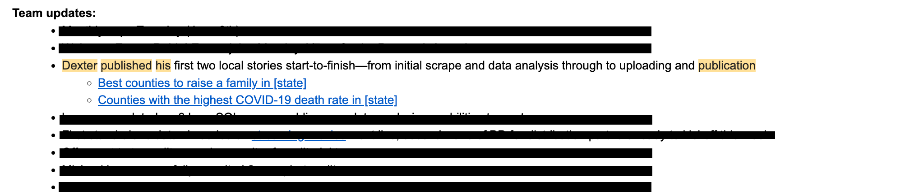

Internships
Within the summers of 2021 and 2022, I’ve worked for Stacker as an editorial research intern in the Local Team. This was a position I was nervous and even reluctant to take. The CEO of the company, a friend of mine, pushed me to take the position because he knew I had experience with coding and resonated with me in conversations we’ve had outside of Stacker related matters. I went through with the interview process and submitted some snippets of my work and got the job. Through the summer, I was tasked with scraping data needed to write stories in the local team. What did this entail? Local stories are stories that are repeated with the related content of the level of the story.
So if I’m writing a “Top 10 best pizza places in New Mexico”, I’d write the same correct story for each state not just New Mexico. I would do the same for city and even county level stories. 2021 was a year where I learned and executed these skills and 2022 was the year, I used these skills to automate many of these stories.” Click through to see some videos of my projects.